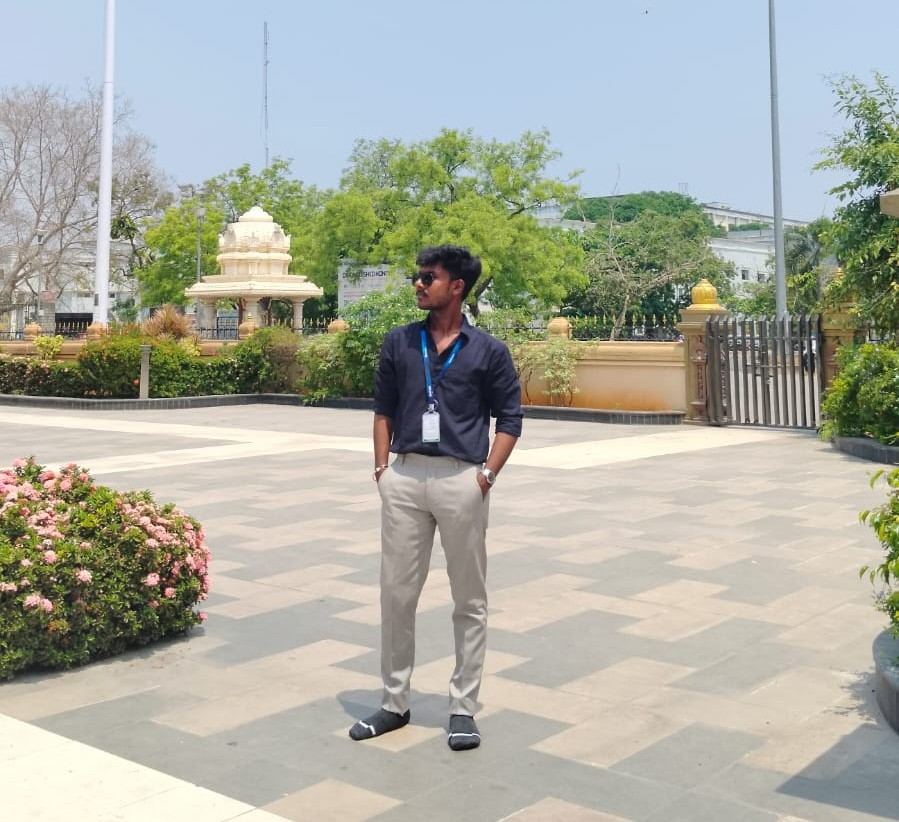

Deepak's Portfolio
üåüSummary
My name is Deepak V. Passionate and motivated Computer Engineering student driven by innovation, problem-solving, and continuous self-evolution. Currently pursuing a B.E. in Computer Science and Engineering at Sri Sairam Engineering College. Inspired by the mantra "Arise", I aim to bridge real-world problems with tech-powered solutions, with a growing portfolio in web development, IoT, and AI-assisted systems. Seeking opportunities to contribute meaningfully to impactful projects while constantly leveling up my skill set.

üéìEducation
Sri Sairam Engineering College
B.E. in Computer Science and Engineering
2024 - Present
- Current Semester: 2
- Subjects:
- Python
- Discrete Mathematics
- Engineering Graphics
- Environmental Science
- Physics
- English
- Tamil
Buvana Krishnan Matriculation Higher Secondary School
HSC/12th Grade
- Score: 550 / 600
- Percentage: 91.67%
- Year: 2024
Buvana Krishnan Matriculation Higher Secondary School
SSLC/10th Grade
- Score: 416 / 500
- Percentage: 83.2%
- Year: 2022
üíº Work Experience
üõ†Ô∏è Skills
- Languages
- Web Dev
- HTML
- CSS
- React
- Figma(UI/UX Design)
- Tools
- VS Code
- Git
- Arduino IDE
- Skillrack
- Soft Skills
- Leadership
- communciation
- Time Management
- Public Speaking(Improving)
- Other
- IoT Prototyping
- Hackathon participation
- Project Management
üèÖ Awards, Certifications & Achievements
- üèÜ 700+ Skillrack Problems Solved ‚Äì Actively honing coding logic and problem-solving
- ü•á 2-Day LSDG Immersion Program ‚Äì Localization of Sustainable Development Goals
- ü߆ Webinar: IEEE SIGHT & EPICS ‚Äì Exposure to socially impactful tech projects
- üèÖ Electrobot Robotics Kit Hands-on ‚Äì Arduino-based Water Level Detection System
- üìú Hackathon Registrations ‚Äì Google Solution Challenge 2025, IIT AI Hackathon
- üéñÔ∏è Smart Projects
- EcoBreathe (Smart Air Quality System)
- AquaSmart Auto-Clean System
- Smart Grievance System for Villages
- Automated Vermi Composting with Tamil Voice Assistant
Click the link below to know more about my hobbies
Hobbies
Click the link below to know more about my contact details
Contact